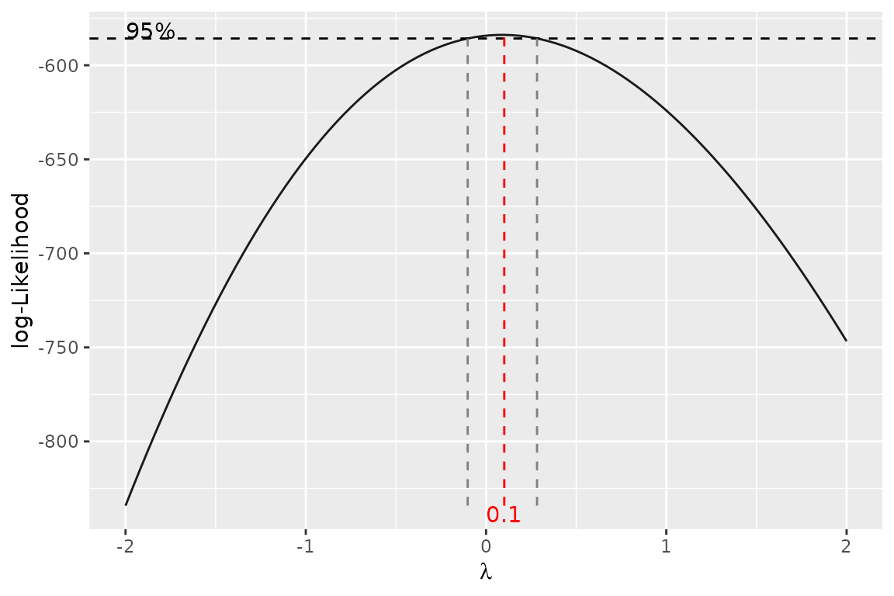
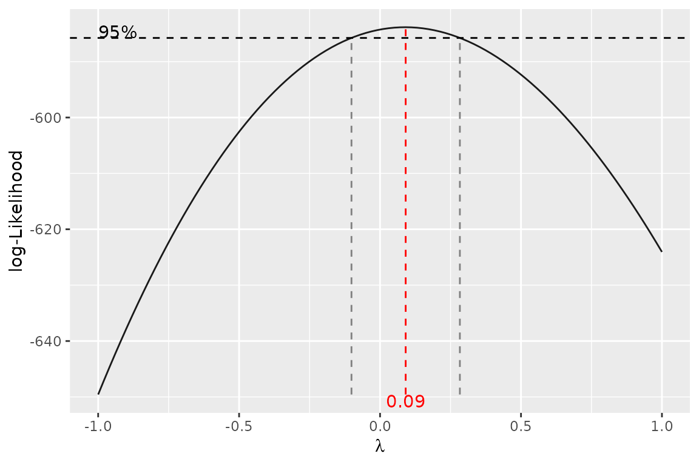

This vignette shows the functions for summarising and checking regression models:
| Function | What it does |
|---|---|
logist_summary() |
odds ratios, 95% CIs and p-values of a logistic regression |
subgroup_effect() |
odds ratios of covariables within each level of an interacting factor |
t() |
transposes a subgroup_effect() result |
as_sstable() |
turns these summaries (or a list of table parts) into an sstable |
explicit() |
rewrites a linear model formula with every term spelled out |
gg_boxcox() |
Box-Cox profile likelihood plot for a linear model, with
ggplot2
|
The examples use baseline_data, a
simulated two-arm trial bundled with the package, so
the estimates illustrate the functions and say nothing about the
treatment. We model death (outcome == 4):
dat <- baseline_data
dat$Arm <- factor(dat$Arm, levels = c("Sham procedure", "Intrathecal treatment"))
dat$sex <- factor(dat$sex, levels = c("F", "M"), labels = c("Female", "Male"))
dat$died <- dat$outcome == 4Logistic regression: logist_summary()
logist_summary() takes a fitted binomial
glm and returns one row per coefficient with the log odds
ratio, odds ratio, 95% CI and p-value.
fit <- glm(died ~ Arm + age + sex + apacheii, data = dat, family = binomial)
logist_summary(fit)
#> - Method: Likelihood ratio
#> - CIs are calculated at 95% level of confidence.
#>
#> log.OR OR lower.CI upper.CI p.value
#> (Intercept) -1.62 0.20 0.03 1.24 0.0840
#> ArmIntrathecal treatment 0.11 1.11 0.45 2.79 0.8154
#> age -0.01 0.99 0.96 1.03 0.7106
#> sexMale -1.05 0.35 0.14 0.94 0.0384
#> apacheii 0.02 1.02 0.90 1.16 0.7163The default method = "lik.ratio" gives
profile-likelihood CIs and likelihood-ratio tests, which behave better
than Wald statistics in small samples or with rare events.
method = "wald" gives the Wald versions:
logist_summary(fit, method = "wald")
#> - Method: Wald
#> - CIs are calculated at 95% level of confidence.
#>
#> log.OR OR lower.CI upper.CI p.value
#> (Intercept) -1.62 0.20 0.03 1.30 0.0910
#> ArmIntrathecal treatment 0.11 1.11 0.45 2.74 0.8155
#> age -0.01 0.99 0.96 1.03 0.7105
#> sexMale -1.05 0.35 0.14 0.91 0.0309
#> apacheii 0.02 1.02 0.90 1.17 0.7155stat_digits and p_digits set the decimal
places. verbose = TRUE prints a note on the method, and
flextable = TRUE returns a report-ready table:
logist_summary(fit, flextable = TRUE)log.OR |
OR |
lower.CI |
upper.CI |
p.value |
|
|---|---|---|---|---|---|
(Intercept) |
-1.62 |
0.20 |
0.03 |
1.24 |
0.0840 |
ArmIntrathecal treatment |
0.11 |
1.11 |
0.45 |
2.79 |
0.8154 |
age |
-0.01 |
0.99 |
0.96 |
1.03 |
0.7106 |
sexMale |
-1.05 |
0.35 |
0.14 |
0.94 |
0.0384 |
apacheii |
0.02 |
1.02 |
0.90 |
1.16 |
0.7163 |
Note: 95% confidence intervals and p-values are based on likelihood ratio statistics. | |||||
Effects within subgroups: subgroup_effect()
When a covariable interacts with a factor, its odds ratio differs
between the levels of that factor. subgroup_effect()
computes the odds ratio, CI and p-value of each interacting covariable
within each level. The factor goes on the right-hand side of the
formula:
fit_ia <- glm(died ~ apacheii * Arm + age * Arm, data = dat, family = binomial)
subgroup_effect(~ Arm, fit_ia)
#> - Method: Likelihood ratio
#> - CIs are calculated at 95% level of confidence.
#>
#> Arm = Sham procedure log.OR OR CI.lower CI.upper p.value
#> apacheii 0.02 1.02 0.84 1.21 0.8645
#> age 0.01 1.01 0.96 1.06 0.8223
#>
#> Arm = Intrathecal treatment log.OR OR CI.lower CI.upper p.value
#> apacheii 0.01 1.01 0.85 1.19 0.9029
#> age -0.02 0.98 0.94 1.03 0.4312Put one covariable on the left-hand side to get a single table with one row per level:
subgroup_effect(apacheii ~ Arm, fit_ia, method = "wald")
#> - Method: Wald
#> - CIs are calculated at 95% level of confidence.
#>
#> log.OR OR CI.lower CI.upper p.value
#> Sham procedure 0.02 1.02 0.85 1.22 0.8641
#> Intrathecal treatment 0.01 1.01 0.85 1.20 0.9028t() regroups the result by covariable instead of by
level (the same as transpose = TRUE):
t(subgroup_effect(~ Arm, fit_ia, method = "wald"))
#> - Method: Wald
#> - CIs are calculated at 95% level of confidence.
#>
#> apacheii log.OR OR CI.lower CI.upper p.value
#> Sham procedure 0.02 1.02 0.85 1.22 0.8641
#> Intrathecal treatment 0.01 1.01 0.85 1.20 0.9028
#>
#> age log.OR OR CI.lower CI.upper p.value
#> Sham procedure 0.01 1.01 0.96 1.05 0.8228
#> Intrathecal treatment -0.02 0.98 0.94 1.03 0.4341The model can also be given as a formula, which is then fitted with
glm(family = binomial):
subgroup_effect(age ~ Arm, died ~ age * Arm, data = dat, flextable = TRUE)
#> - Method: Likelihood ratio
#> - CIs are calculated at 95% level of confidence.
#>
#> log.OR OR CI.lower CI.upper p.value
#> Sham procedure 0.01 1.01 0.96 1.06 0.8218
#> Intrathecal treatment -0.02 0.98 0.94 1.03 0.4354Converting to sstable: as_sstable()
as_sstable() converts the result of
logist_summary() or subgroup_effect() into an
sstable (a list with table and footer), which
the table functions in
vignette("custom-tables", package = "C306") can format or
combine with other tables:
ss <- as_sstable(logist_summary(fit))
ss$table
#> ──────────────────────────────────────────────────────────────
#> log.OR OR lower.CI upper.CI p.value
#> (Intercept -1.62 0.20 0.03 1.24 0.0840
#> )
#> ArmIntrath 0.11 1.11 0.45 2.79 0.8154
#> ecal
#> treatment
#> age -0.01 0.99 0.96 1.03 0.7106
#> sexMale -1.05 0.35 0.14 0.94 0.0384
#> apacheii 0.02 1.02 0.90 1.16 0.7163
#> ──────────────────────────────────────────────────────────────
#>
#> Column names: V1, V2, V3, V4, V5, V6It also assembles a table from parts: a list with
header, body (a named list of matrices, one
per row group) and an optional footer.
parts <- list(
header = list(c("", "Sham procedure", "Intrathecal treatment")),
body = list(
"Age, years" = rbind(c("Mean", "50.1", "49.8"),
c("Median", "51", "49"))
),
footer = "Illustrative numbers."
)
as_sstable(parts, flextable = TRUE)Sham procedure |
Intrathecal treatment |
|
|---|---|---|
Age, years | ||
Mean |
50.1 |
49.8 |
Median |
51 |
49 |
Illustrative numbers. | ||
Explicit model formulas: explicit()
In a model with an interaction such as bmi ~ age * sex,
drop1() only considers dropping the interaction, because
the main effects are implied by it. explicit() refits the
model with every term written out, so each main effect can be tested or
dropped on its own. The fit itself is unchanged.
fit_lm <- lm(bmi ~ age * sex, data = dat)
fit_explicit <- explicit(fit_lm)
formula(fit_explicit)
#> bmi ~ age + sexMale + `age:sexMale`
drop1(fit_explicit)
#> Single term deletions
#>
#> Model:
#> bmi ~ age + sexMale + `age:sexMale`
#> Df Sum of Sq RSS AIC
#> <none> 3536.2 704.11
#> age 1 0.3320 3536.5 702.14
#> sexMale 1 18.3997 3554.6 703.52
#> `age:sexMale` 1 0.0335 3536.2 702.12Box-Cox plot: gg_boxcox()
gg_boxcox() is a ggplot2 version of
MASS::boxcox(). It plots the profile log-likelihood of the
Box-Cox power lambda for a linear model with a positive
response, with the 95% confidence interval for lambda
marked. A lambda near 0 suggests a log transformation, near
1 no transformation.
gg_boxcox(icudays ~ Arm + age, data = dat)
A fitted lm works too, and lambda sets the
grid:
